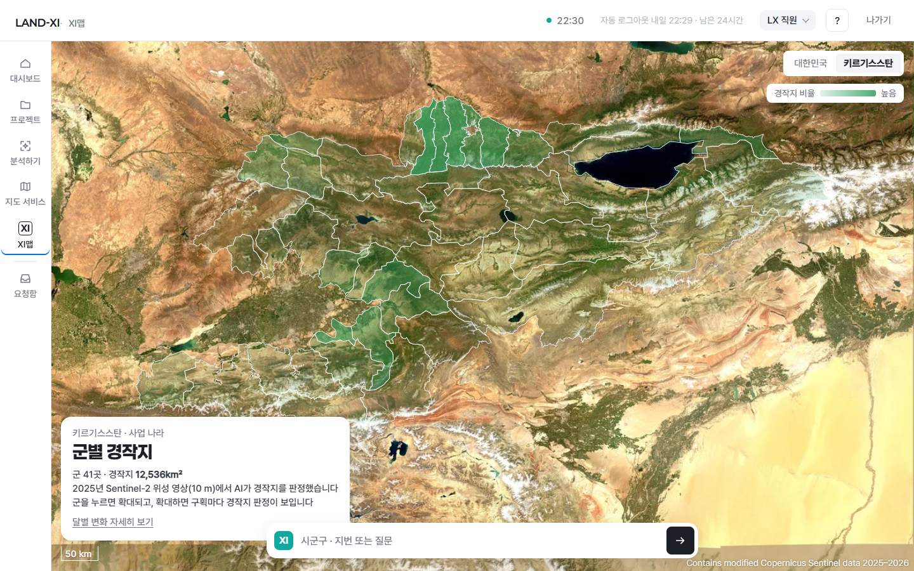
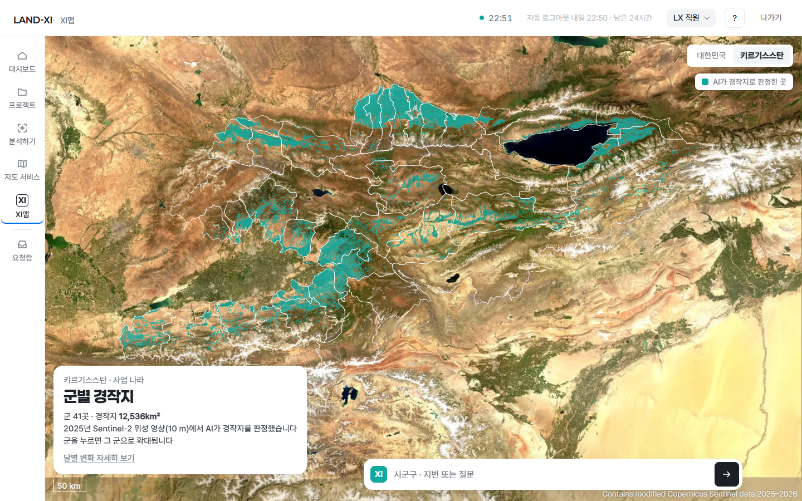
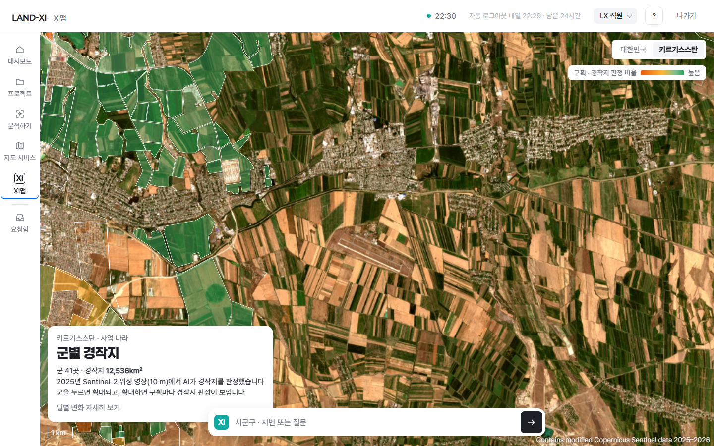
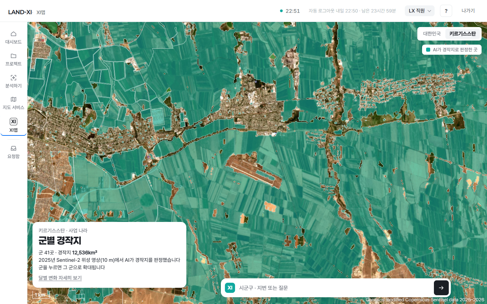
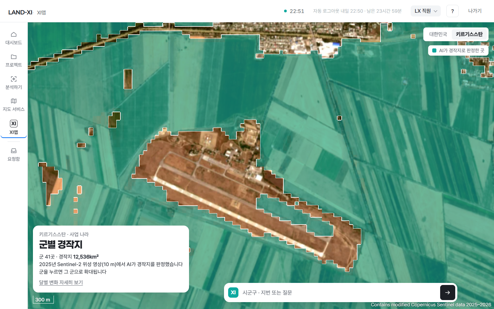
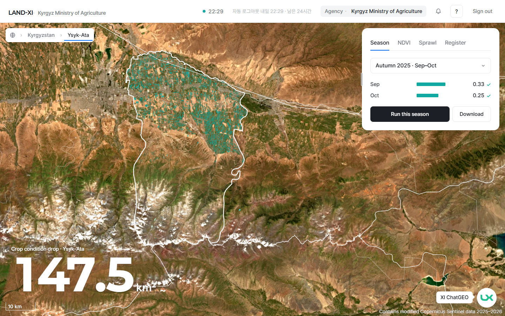
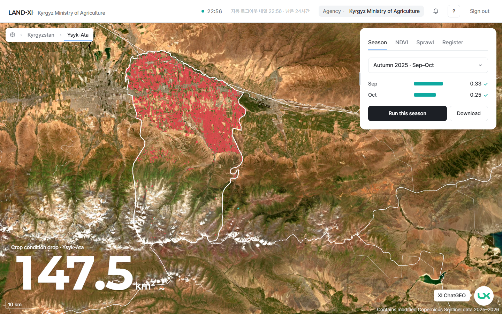
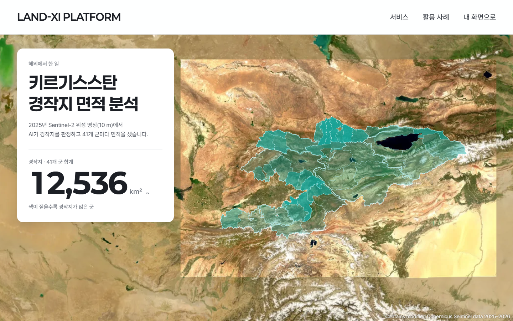
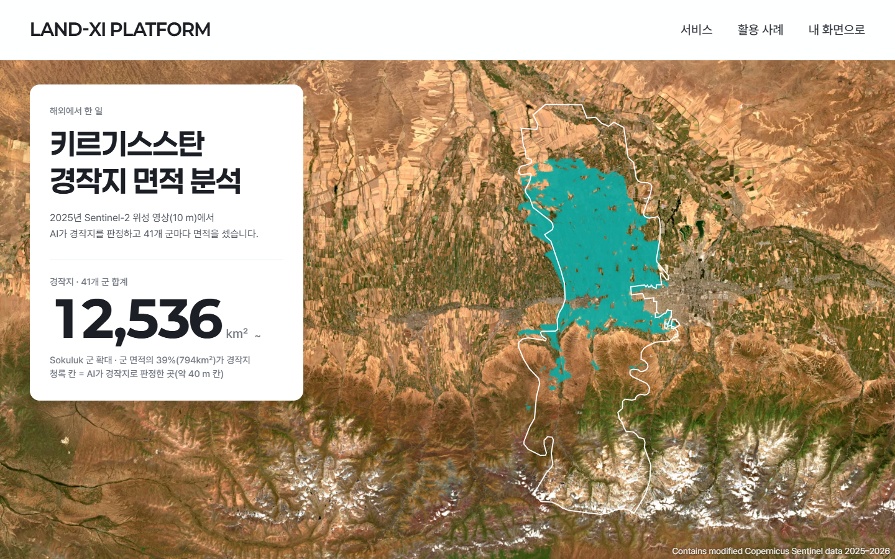

해외 결과(경작지 · 작황 하락 · 건물 면적 변화)가 멀리서도, 계속 확대해도 보이게 했습니다
만든 것
XI맵은 군 41곳 모두 AI가 경작지로 판정한 곳을 면으로 칠합니다. 멀리서는 작은 밭도 묶어서 보이고, 가까이 가면 칸 경계에 흰 선이 생깁니다. 줌 10.5에서 꺼지던 것과 한 군만 보이던 것을 고쳤습니다. 해외 기관 첫 화면에서 작황 하락은 붉은 칸으로 바꿔 멀리서도 또렷하게 했고, 건물 면적 변화 칸은 진하게 하고 테두리를 넣었습니다. 메인 장면의 나라 칠과 군 확대 그림도 진하게 했습니다. (그림 10월 17일 22:29~22:58 · 전후) (구현 때 그림 10월 17일 22:29–10월 17일 22:58)
보는 곳
- app.land-xi.dev/landxi/v3/xi-clean/?nation=kg아이디 test@lx.or.kr · 임시 비밀번호키르기스스탄 → 확대해 보기
- kgz-agri.land-xi.dev/landxi/v3/global/해외 기관 계정Season · Sprawl 탭에서 확대
- app.land-xi.dev/landxi/v3/main/LX 직원아래로 내려 키르기스스탄 장면









